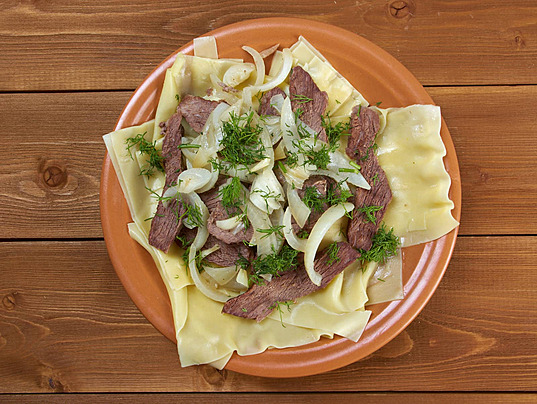

Back
Beshbarmak

Description
Beshbarmak is the most iconic Kazakh dish, traditionally eaten with the hands,
which is why its name translates to "five fingers." It is a celebratory meal
consisting of large, thin sheets of hand-rolled pasta topped with tender,
slow-boiled meat (usually horse or lamb) and plenty of onions cooked in a
rich meat broth called shyk.
Ingredients
- 2 kg Meat (Lamb, Beef, or Horse meat)
- 500g Flour
- 2 Eggs
- 3-4 Large Onions
- Salt and black pepper to taste
- Water or broth
Steps
- Boil the meat in a large pot for 2-3 hours until tender, skimming off the fat.
- Prepare the dough by mixing flour, eggs, and a little broth. Roll it out very thin and cut into large squares.
- Remove the cooked meat and slice it into bite-sized pieces.
- Boil the dough squares in the meat broth for a few minutes until cooked.
- Sauté sliced onions in some of the meat fat and broth.
- Layer the dough on a large platter, top with the meat, and pour the onion mixture over everything.